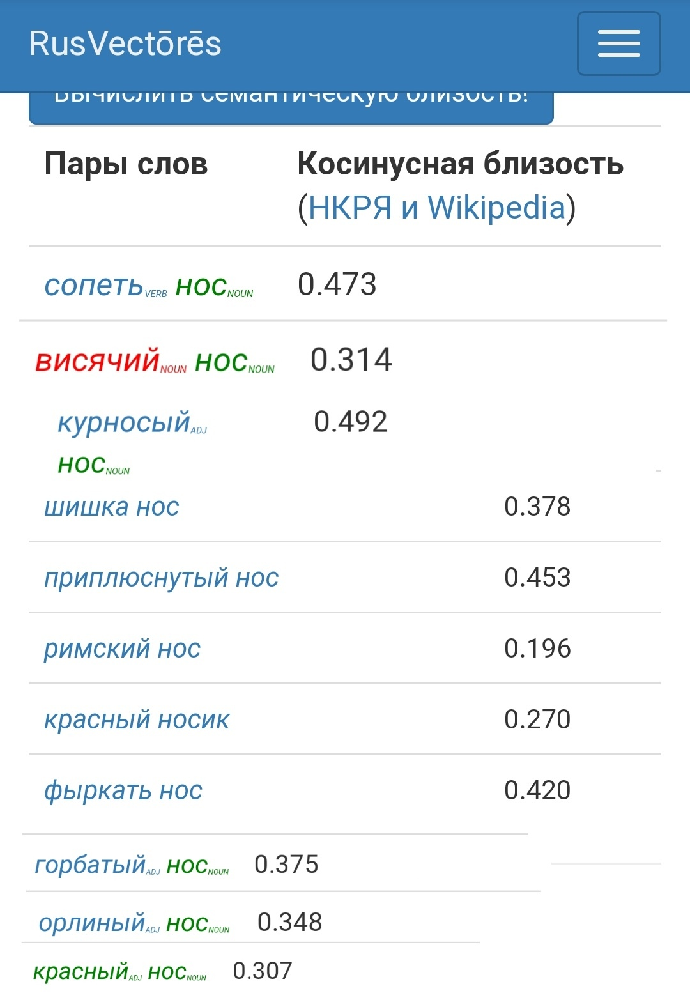

Все упоминания носа можно найти в НКРЯ. В подкорпусе мы задали название “Война и мир” и получили следующие результаты: слово “нос” встречается в романе 57 раз. Затем мы выписали примеры в две таблицы: в первой нос служит для описания персонажей. Проанализировав полученные результаты, мы увидели, что нос как часть портрета становится отражением самого героя. Так, красный нос Тимохина указывает на простоту героя, а висячий нос Аракчеева такой же отталкивающий, как и сам персонаж. Во второй таблице нос выступает не как деталь портрета. Можно заметить, что про Пьера часто говорится, что во время молчания он сопит носом, а Андрей Болконский “перенимает” фырканье у отца.
Выводы после анализа результатов:


С помощью Google ngrams мы получили следующий график: Из него видно, что в годы, когда Толстой писал “Войну и мир” (1863-1869), количество употреблений слова “нос” в русской литературе минимальное. Нос считался неприглядной телесной деталью, причем для Толстого - исключительно мужской. Зато в двадцатом веке случаи употребления этого слова возросли во много раз.
В нашей работе, программа MyStem помогла произвести морфологический анализ романа "Война и мир" на русском языке. Так же, произвести процесс преобразования словоформ к первоначальной словарной форме.
С использованием AntConc нам удалось произвести поиск и подсчет определенных элементов текста, проанализировать частотность и контекст употребления слова “нос” и его производных. На основе проделанной работы, стало возможным установить, что слово “нос” встречается 65 раз в романе “Война и мир”.
С помощью RusVectores мы вычислили семантические сходства слова “нос” и прилагательных и глаголов, которые Толстой употребляет с ними. Вывод: все словосочетания очень распространенные, никакого новаторства. (слабая семантическая близость только у пары нос-римский).
Основные выводы мы сделали после работы с НКРЯ, остальные инструменты лишь дополнили исследование фактами и статистикой. Итак, для анализа конкретного мотива больше всего подходит Национальный корпус.